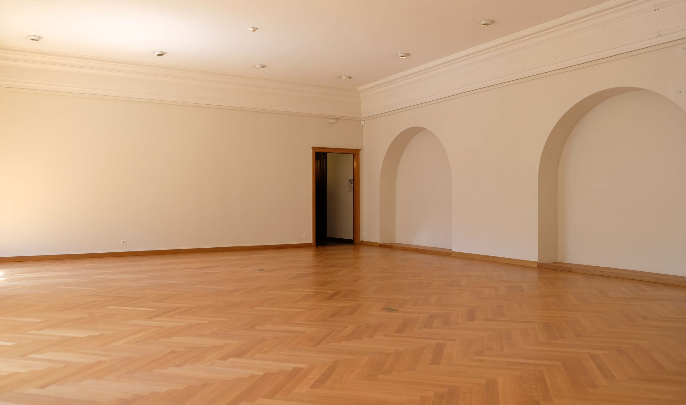
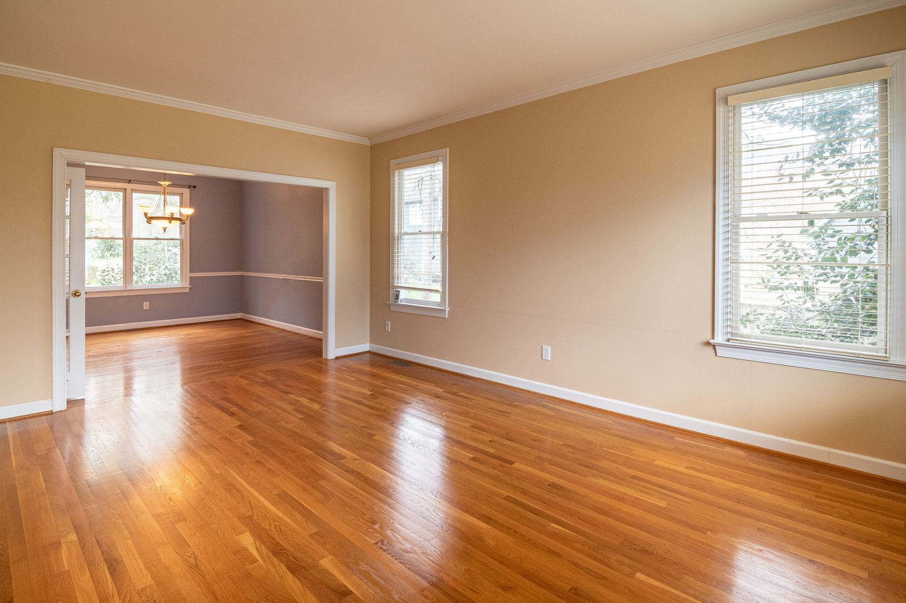
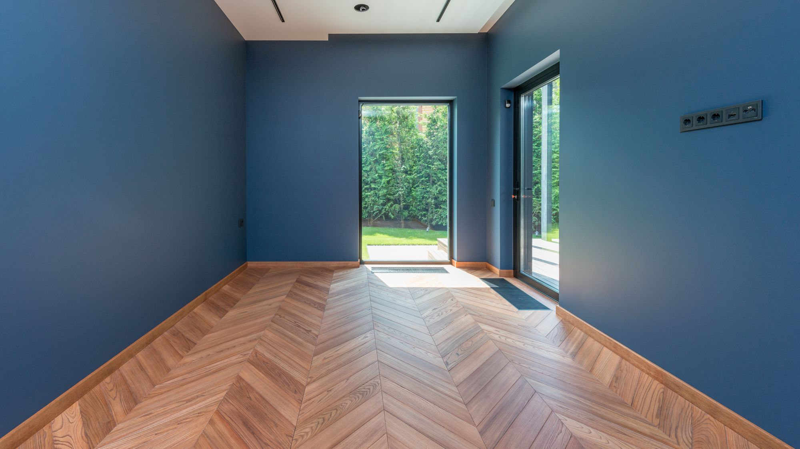
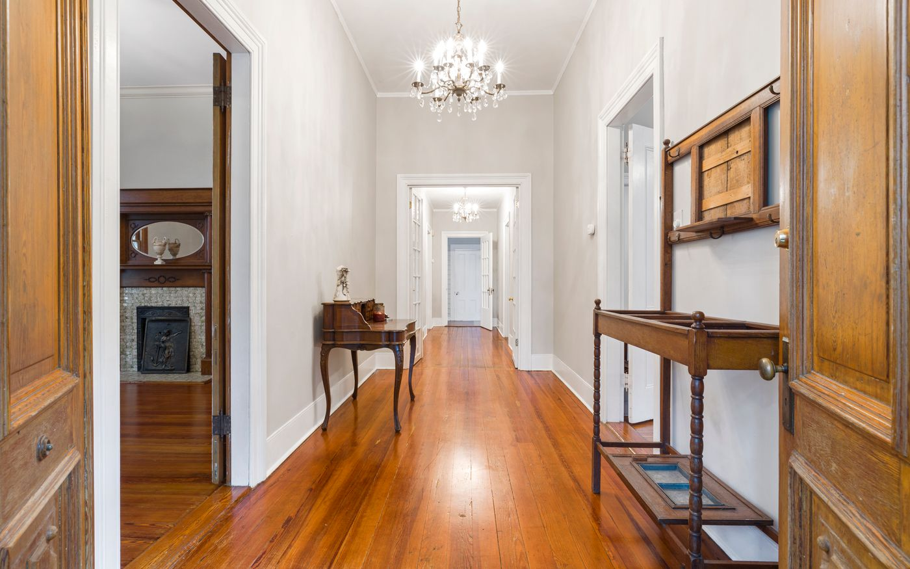
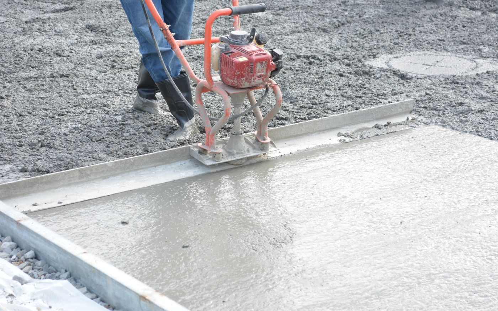
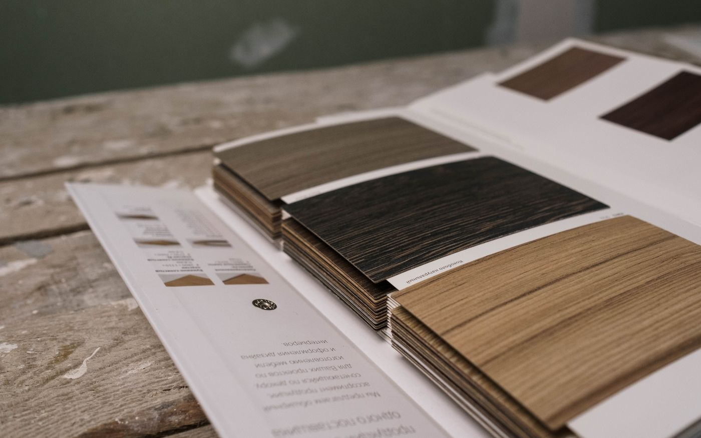
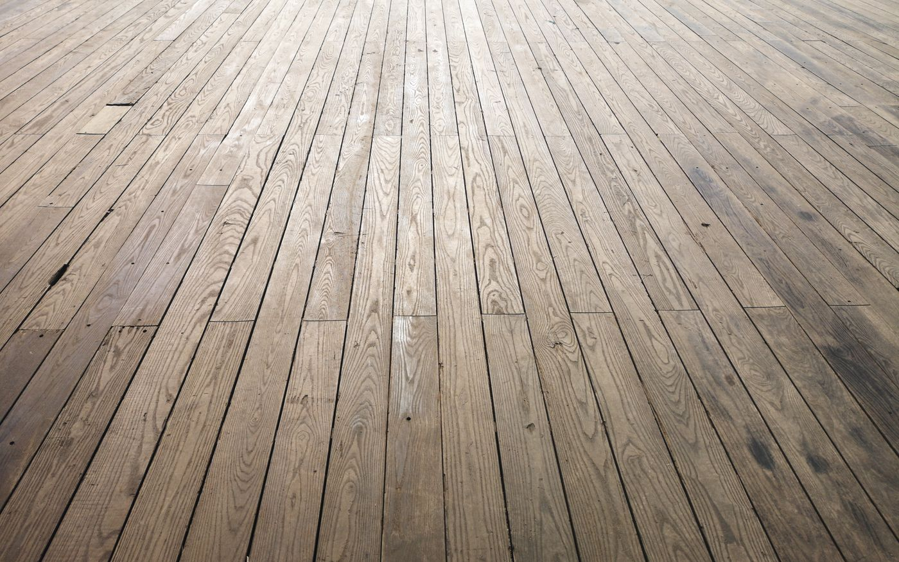
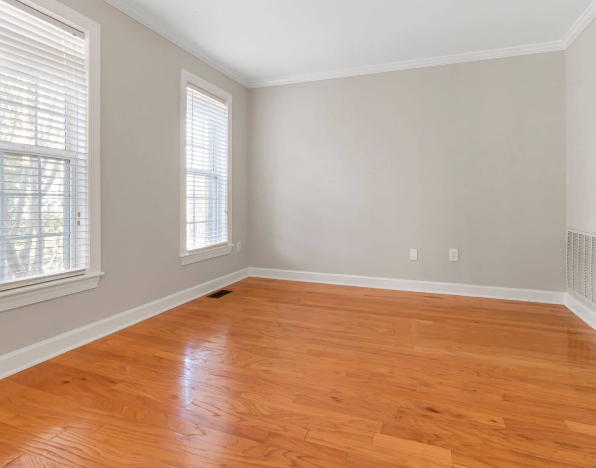

Premibel
Trouver votre parquet
Références, essences, teintes et motifs : le catalogue de parquets et le showroom de Premibel.
Découvrir les parquets premibel.fr
Guides · Motifs · Outils
Guides, inspirations et outils pour choisir votre parquet, le voir chez vous et préparer votre projet. Pour les références, nous orientons vers Premibel. Pour la pose et la rénovation en Île-de-France, vers Allure Design.
Par où commencer
Quatre étapes d’un même chantier. Commencez par celle qui vous concerne aujourd’hui.
Support, sens de pose, massif ou contrecollé : ce qui se décide avant de commander.
02De la pose droite au Point de Hongrie : le motif fait le caractère de la pièce.
03Votre photo, un parquet, un motif : le sol change à chaque clic.
04Quatre étapes courtes pour cadrer la pièce, le support et le besoin.
Après le choix
Pose Parquet vous aide à définir votre besoin, puis vous oriente vers la bonne solution.
Premibel
Références, essences, teintes et motifs : le catalogue de parquets et le showroom de Premibel.
Découvrir les parquets premibel.frAllure Design
Pose de parquet, rénovation intérieure et aménagement, à Paris et en Île-de-France.
Préparer mon projetBesoin du parquet et de la pose ? Décrivez votre projet : nous vous orientons vers les solutions adaptées. Comprendre nos liens commerciaux
Visualiseur · outil
Importez une photo, choisissez un parquet et comparez plusieurs rendus. Le calcul se fait dans votre navigateur : votre photo n’est ni envoyée ni conservée.
Visualiser mon parquet Mode Plan : comparer les sens de pose Tous les outils

Avant AprèsInspiration

Les lames, coupées en biais à leurs extrémités, forment une pointe qui file vers le fond de la pièce et guide le regard.
Tout se joue au traçage : un écart minime en début de pose se cumule et finit par se voir sur toute la longueur.
Elles se commandent ensemble, en quantités égales, avec une marge de chutes plus large qu’une pose droite.
Guides et tutoriels
Les guides tranchent les décisions d’achat ; les tutoriels déroulent le chantier, outillage et contrôles compris.




Vous préférez confier la pose ? Décrivez votre projet.
Votre projet
Décrivez votre pièce, votre parquet et votre besoin. Pose Parquet qualifie votre demande et vous oriente, selon le projet, vers Premibel, Allure Design ou les deux.
